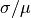
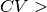
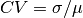

Image Functions module¶
image_fn.crop_patches_from_img(zstack, centroids) |
Crop image patches from a given input image of given width at given (x,y) centroid coordinates. |
This module contains scripts for image manipulation including denoising, enhancement and cropping functions
-
image_fn.crop_patches_from_img(zstack, centroids, width=25)[source]¶ Crop image patches from a given input image of given width at given (x,y) centroid coordinates.
Float centroids are first cast into ints.
Parameters: - zstack : numpy array
input (n_rows x n_cols x n_channels) numpy array.
- centroids : numpy array or list
array of (y,x) centroid coordinates
- width : int (odd)
size of cropped image patch is (width x width x n_channels)
Returns: - zs : numpy array
an array of cropped patches with length equal to the number of centroids.
-
image_fn.detect_centrioles_in_img(zstack_img, size, aniso_params, patch_size, CV_thresh=0.3, tslice=0, is_img_slice=False, filter_border=True, filter_high_intensity_bg=True, remove_duplicates=True, filter_CV=True, separation=5, invert=False, minmass=10, minoverlap=10, bg_min_I=0.2, bg_max_area=1000, bg_dilation=3, bg_invalid_check=0.5, debug=False)[source]¶ Primary function that wraps various functions in this module into one API call to detect centrioles given an image or image stack.
Parameters: - zstack_img : numpy array
- either
- a temporal z-stack (n_frames x n_z x n_rows x n_cols),
- a z-stack (n_z x n_rows x n_cols) or
- a grayscale image (n_rows x n_cols)
- size : float
Approximate expected width of centriole to detect in image pixels.
- aniso_params : Python dict
A Python dictionary giving the parameters for running the anisotropic filtering of Perona-Malik [1]. This dictionary should contain the following keys: ‘iterations’, ‘delta’, kappa’, see
image_fn.perona_malik()- patch_size : int
size of the local image patch to crop for filtering by CV if used, see
image_fn.filter_centrioles_BCV()- CV_thresh : float
coefficient of variation threshold for keeping high SNR detections as in
image_fn.filter_centrioles_BCV()- tslice : int
if tslice 0, takes the corresponding time slice of the temporal z image and returns the max projection image over z. If zstack_img is just a zstack set tslice=-1.
- is_img_slice : bool
Set True if input is a grayscale image.
- filter_border : bool
If True, removes detections within a defined border zone
- filter_high_intensity_bg : bool
If True, removes detections from high intensity background areas.
- remove_duplicates : bool
If True, detects potential duplication of (y,x) locations that may by detecting the same centriole.
- filter_CV : bool
If True, keeps only (y,x) centriole detections whose CV evaluated over a local image crop is greater than a given threshold.
- separation : float
minimum separation distance in pixels between blobs.
- invert : bool
if True, features of interest to detect are assumed darker than background, used in trackpy.locate, see [2]
- minmass : float
minimum integrated intensity values of detected blob used in trackpy.locate, see [2]
- minoverlap : float
distance threshold for calling duplicate (y,x) coordinates, see
image_fn.remove_duplicate_centrioles()- bg_min_I : float
intensity cut-off for defining ‘high’ intensity image areas as in
image_fn.produce_valid_img_mask()- bg_max_area : int
area cut-off for defining ‘large’ background areas as in
image_fn.produce_valid_img_mask()- bg_dilation : int
disk kernel size to dilate background noise mask as in
image_fn.produce_valid_img_mask()- bg_invalid_check : float
this is a check to prevent everything in the image being regarded as being invalid if one knows centrioles should be present. It is an upper bound on the total area of the invalid image area mask output of
image_fn.produce_valid_img_mask().- debug: bool
if True, will produce all intermediate plotting graphics to help debugging.
Returns: - out_dict : Python dict
dictionary which collects the final output detections along with additional detection information.
- The dictionary has the following structure
- ‘centriole_centroids’:
(y,x) coordinates of detected centrioles
- ‘centriole_pos’:
table of all centriole detections with associated intensity statistics
- ‘max_proj_full_img’:
maximum projection image
- ‘max_proj_full_img_denoise’:
anisotropically filtered maximum projection image
- ‘background_mask’:
background image area mask
- ‘valid_detection_mask’:
non-background image areas where centrioles are being detected.
- ‘centriole_SNR’:
associated of detected centrioles
References
[1] (1, 2) Perona, P et. al, “Anisotropic diffusion.” Geometry-driven diffusion in computer vision. Springer, Dordrecht, 1994. 73-92. [2] (1, 2, 3) TrackPy Gaussian blob detection, http://soft-matter.github.io/trackpy/dev/generated/trackpy.locate.html.
-
image_fn.filter_border_centroids_detection(centroids, size, limits)[source]¶ Given (y,x) coordinates and the size of the border, removes all coordinates that lie within the defined border.
Parameters: - centroids : numpy array
array of (y,x) 2D coordinates.
- size : int
border size, how many pixels from the image edge do you consider the border. Isotropic border is assumed.
- limits : tuple-like
(y_max, x_max) pair that define the maximum number of rows, columns respectively of the image.
Returns: - filtered_centroids : numpy array
array of only valid (y,x) 2D coordinates that do not lie in the border zone.
- select : bool array
a binary array either 0 or 1 indicating which centroids lie within the border zone.
-
image_fn.filter_centrioles_BCV(centroids, max_slice_im, patch_size, CV_thresh=0.3)[source]¶ Given (y,x) centroid coordinates, the maximum slice whole frame image filter detections based on signal-to-noise (SNR) ratio within local image crops.
The SNR measure used is the coefficient of variation,  where
 and
and  are the standard deviation and mean of the pixel intensities in the image patch.
are the standard deviation and mean of the pixel intensities in the image patch.Parameters: - centroids : numpy array
array of (y,x) 2D coordinates.
- max_slice_im : numpy array
a grayscale 2D image
- patch_size : int (odd)
width of the local area to crop around the given (y,x) centroid
- CV_thresh : float
Signal-to-noise ratio cut-off where SNR is measured by CV i.e. centroids are kept if  CV_thresh
Returns: - filtered_centroids : numpy array
array of only valid (y,x) 2D coordinates that have CV_thresh.
- select : bool array
a binary array either 0 or 1 indicating which centroids have CV_thresh.
- filtered_CV : array
array with the corresponding CV of filtered_centroids.
-
image_fn.filter_masks(mask, min_area=10, max_area=300, keep_centre=True, dist_thresh=0.5, min_max_area_cutoff=20)[source]¶ filters binary masks to identify the primary large area of interest.
- consideration of minimum and maximum area range.
- preferential consideration of areas near the image centre
if the 2nd option is used, and the found area is smaller than an expected area (min_max_area_cut_off) we default to finding the largest area.
Parameters: - mask : bool numpy array
input (n_rows x n_cols) binary image.
- min_area : int
minimum area of region of interest.
- max_area : int
maximum area of region of interest.
- keep_centre : bool
if True, preferentially consider the closest connected component to the image centre.
- dist_thresh : float (0-1)
what is the upper bound on the distance between the centroid of the segmented area of interest candidate and the image centre given as a fraction of the image patch width.
- min_max_area_cutoff : int
what is the minimum size below which we disregard the closest area to the image centre and fallback to the largest area. (only used if keep_centre=True)
Returns: - cand_mask : bool numpy array
either a blank image same size as input if nothing is detected or a refined binary mask with only one area of interest of same image size as the input.
-
image_fn.filter_noise_centroids_detection(centroids, mask)[source]¶ Given (y,x) coordinates and a binary mask of 0,1 of background regions, removes coordinates that lie in 1 areas (background).
Parameters: - centroids : numpy array
array of (y,x) 2D coordinates.
- mask : numpy array
boolean or integer mask with values 1 or 0 denoting invalid and valid spatial regions respectively.
Returns: - filtered_centroids : numpy array
array of only valid (y,x) 2D coordinates that lie in mask==0 regions.
- select : bool array
a binary array either 0 or 1 indicating which centroids are valid.
-
image_fn.find_best_focus(zstack)[source]¶ Finds the best focus slice by finding the z-slice that maximises the signal-to-noise ratio given by coefficient of variation (CV).

where
and are the standard deviation and mean of the slice pixel intensities.Parameters: - zstack : numpy array
an input (n_z x n_rows x n_cols) image.
Returns: - best_focus_slice : int
index of the z-slice of best focus.
-
image_fn.find_best_focus_stacks(zstacks)[source]¶ Finds the best focus slice of a series of z-slice stacks and constructs an array composed of the best-focus slices.
Parameters: - zstacks : numpy array
an input (n_stacks x n_z x n_rows x n_cols) image.
Returns: - best_focus_imgs : numpy array
a new numpy array (n_stacks x n_rows x n_cols) composed of the best-focus slices only.
- best_focus_slices : numpy array
list of the index of the z-slice of best focus for each z-slice stack.
-
image_fn.locate_centroids_simple(mask)[source]¶ Given an image, locates all centroids of connected components.
Note: This function inherently assumes a threshold of 0 and dilation with disk kernel of 3.
Parameters: - mask : numpy array
an input grayscale image.
Returns: - centroids : numpy array
an array of (y,x) coordinate pairs giving the peaks in the input image.
-
image_fn.perona_malik(img, iterations=10, delta=0.14, kappa=15)[source]¶ Runs Perona-Malik anisotropic on a given grayscale image.
Parameters: - img : numpy array
(n_rows x n_cols) grayscale image.
- iterations : int
Number of iterations to run the diffusion process. Higher gives smoother output.
- delta : float
This is the time step
 in the diffusion equation.
in the diffusion equation.- kappa : float
This regulates the sensitivity to edges in the Perona-Malik formulation.
Returns: - filtered_img : numpy array
The filtered output image. Same size as input of type float.
References
[1] Perona, P et. al, “Anisotropic diffusion.” Geometry-driven diffusion in computer vision. Springer, Dordrecht, 1994. 73-92.
-
image_fn.produce_valid_img_mask(img, min_I=0.1, max_area=1000, dilation=3)[source]¶ Example Centriole images may have a ring of high pixel intensity of a much larger structure. This function is designed to identify such large continuous areas in order to filter detections.
Parameters: - img : numpy array
an input grayscale image.
- min_I : float
the lower threshold for identifying the bright intensity regions. Assumes normalised intensities i.e. image intensities should be between [0,1]
- max_area : integer
threshold for identifying ‘large’ region based on counting the number of pixels within the area.
- dilation : int
size of the disk kernel used to postprocess and smoothen resulting binary segmentation.
Returns: - invalid_regions : numpy array
a binary image of either 0, 1 pixel intensities indicating the large regions of high intensity i.e. invalid centriole zones.
-
image_fn.remove_duplicate_centrioles(centroids, min_dist, lam=1000)[source]¶ Removes duplicate (y,x) returning only one (y,x) instance given array of (y,x) centroid coordinates and a minimum distance threshold below which we call two (y,x) duplicates,
Parameters: - centroids : numpy array
array of (y,x) 2D coordinates.
- min_dist : float
two (y,x) coordinates are a duplicate if the distance between them is less than mid_dist.
- lam : float
a very large float, typically just a number larger than the image diagonal to exclude oneself in the pairwise pairing process of (y,x) coordinates.
Returns: - filtered_centroids : numpy array
array of unique (y,x) 2D coordinates.
- select : bool array
a binary array either 0 or 1 indicating which centroids are taken as unique (y,x) instances.
-
image_fn.rescale_intensity_stack(img_stack)[source]¶ rescales the intensity of a series of images given as a (n_imgs x n_rows x n_cols x channels) tensor such that it is [0,255] for uint8 and [0,1] for floats.
Parameters: - img_stack : numpy array
- an input image of 3 or 4 dimensions:
(n_imgs x n_rows x n_cols): gray-image stack (n_imgs x n_rows x n_cols x 3): rgb-image stack
Returns: - img_stack_rescale : numpy array
intensity rescaled images with range [0,255] for uint8 and [0,1] for floats
-
image_fn.resize_img_stack(img_stack, shape=(256, 256))[source]¶ Resizes a series of images given as a (n_imgs x n_rows x n_cols x channels) tensor.
Parameters: - img_stack : numpy array
- an input image of 3 or 4 dimensions:
(n_imgs x n_rows x n_cols): gray-image stack (n_imgs x n_rows x n_cols x 3): rgb-image stack
- shape : 2-tuple
(row_size, col_size) tuple giving the desired output image dimension
Returns: - img_stack_new : numpy array
- a numpy array of resized input:
(n_imgs x shape[0] x shape[1]): gray-image stack (n_imgs x shape[0] x shape[1] x 3): rgb-image stack
-
image_fn.uint16_2_uint8(vidstack)[source]¶ Casts any input image to be of uint8 type.
Note: Though named uint16, converts any input to uint8. We are just implicitly assuming with biological imaging uint16 input.
Parameters: - vidstack : numpy array
an input image (any size) as a numpy array.
Returns: - uint8_img : numpy array
a numpy array of same size as input rescaled to be of uint8 (range [0,255]).